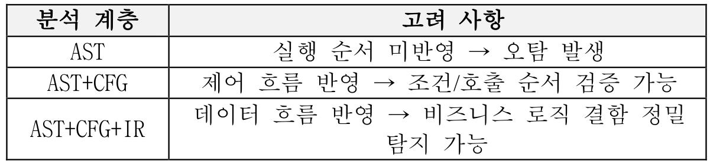
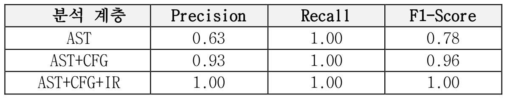
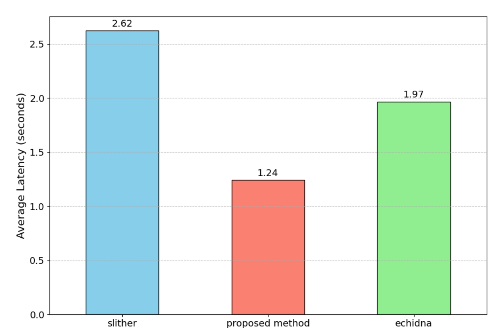

내용
문법은 맞지만 자금 처리 순서나 조건이 틀린 코드는 자산 탈취로 이어집니다.
- 서비스 구조
- 탈중앙 금융(DeFi)의 대출 서비스는 예치, 인출, 대출, 청산으로 자금을 움직입니다.
- 피해 경로
- 실행 전에 권한이나 상태를 확인하는 코드가 빠지거나 잘못 놓이면 자산을 잃습니다.
Publication
탈중앙 금융(DeFi) 서비스의 예치, 인출, 대출, 청산 코드를 세 단계로 분석합니다. 자금이 움직이기 전 확인 절차가 빠졌거나 순서가 틀린 곳을 배포 전에 찾습니다.
AST+CFG+IR 세 계층을 모두 쓴 경우. 평가 사례 수는 논문에 명시되지 않음
AST 단독, AST+CFG, AST+CFG+IR
논문 본문 기준 Slither 2.63초, Echidna 1.98초
문법은 맞지만 자금 처리 순서나 조건이 틀린 코드는 자산 탈취로 이어집니다.
자금이 움직이는 네 기능을 세 분석 계층으로 차례로 좁혀 가며 점검합니다.

세 계층을 모두 쓰면 정밀도와 재현율이 1.00이었지만 평가 사례 수는 논문에 없습니다.


분석 계층을 더할수록 오탐이 줄어든다는 것을 수치로 보였습니다.
적용 범위를 넓히고 확인 코드를 추천하는 기능을 붙이는 것이 남은 과제입니다.